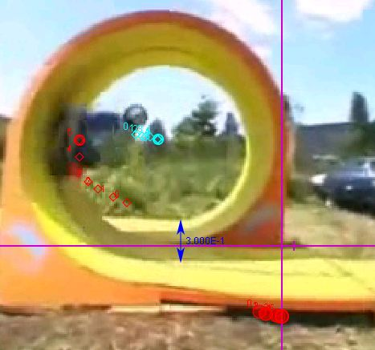

Pocket Bike Looping: Circular Motion
Using the Tracked file, find
the speed of the bike entering the loop
the speed of the bike in the loop
the speed the bike needs to go to make it through the loop
